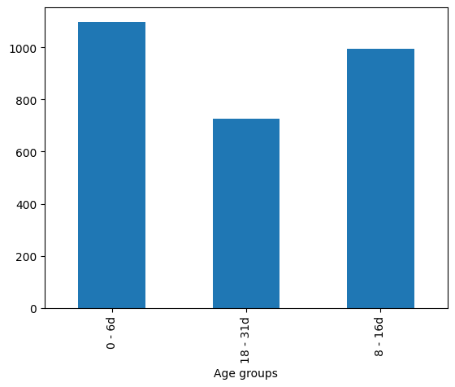
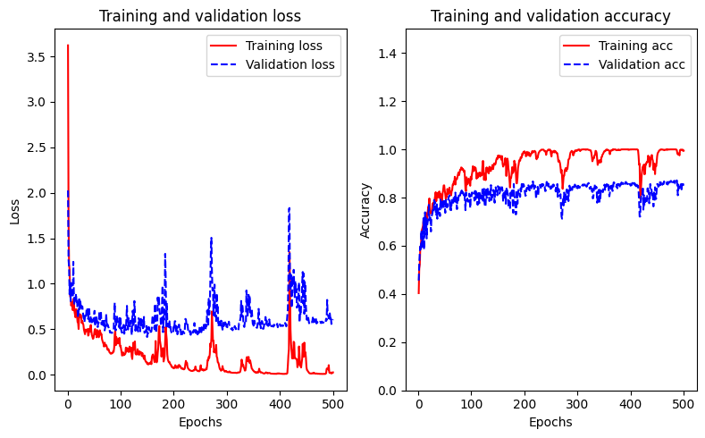
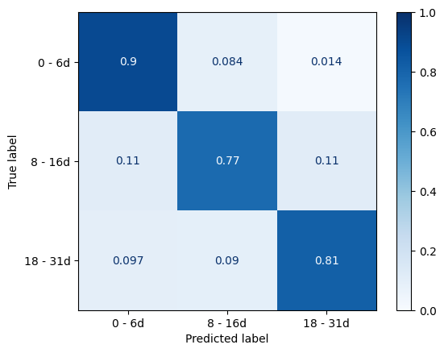

# import packages
import tensorflow as tf
from tensorflow import keras
import tensorflow_docs as tfdocs
from keras import utils
import pandas as pd
import numpy as np
import matplotlib.pyplot as plt
from sklearn.preprocessing import LabelEncoder
from sklearn.model_selection import train_test_split
from sklearn.preprocessing import StandardScalerArificial neural networks for age classification
1 Arificial neural networks for age classification
In [2]:
# Data
df = pd.read_csv("/Users/mauropazmino/Documents/Learning/Deep_learning_tensor/data/MIRS_temperature_vs_age_20241014.dat", sep="\t")In [3]:
df.head()| Cat1 | Cat2 | Cat3 | Cat4 | Cat5 | Cat6 | Cat7 | Cat8 | Cat9 | Cat10 | ... | 420 | 418 | 416 | 414 | 412 | 410 | 408 | 406 | 404 | 402 | |
|---|---|---|---|---|---|---|---|---|---|---|---|---|---|---|---|---|---|---|---|---|---|
| 0 | AC | S | 0 | YY | SU | T1 | C1 | R1 | 190823 | 111223 | ... | 0.2321 | 0.2309 | 0.2283 | 0.2274 | 0.2275 | 0.2286 | 0.2305 | 0.2316 | 0.2323 | 0.2336 |
| 1 | AC | S | 0 | YY | SU | T1 | C1 | R1 | 190823 | 111223 | ... | 0.2223 | 0.2198 | 0.2187 | 0.2192 | 0.2195 | 0.2192 | 0.2194 | 0.2211 | 0.2225 | 0.2222 |
| 2 | AC | S | 0 | YY | SU | T1 | C1 | R1 | 190823 | 111223 | ... | 0.2040 | 0.2028 | 0.2019 | 0.2022 | 0.2037 | 0.2048 | 0.2054 | 0.2056 | 0.2047 | 0.2036 |
| 3 | AC | S | 0 | YY | SU | T1 | C1 | R1 | 190823 | 111223 | ... | 0.2409 | 0.2389 | 0.2364 | 0.2353 | 0.2360 | 0.2368 | 0.2372 | 0.2380 | 0.2390 | 0.2398 |
| 4 | AC | S | 0 | YY | SU | T1 | C1 | R1 | 190823 | 111223 | ... | 0.2150 | 0.2155 | 0.2152 | 0.2150 | 0.2154 | 0.2154 | 0.2156 | 0.2165 | 0.2181 | 0.2191 |
5 rows × 1812 columns
In [3]:
df.rename(columns={'Cat3':'Age'}, inplace=True)In [4]:
df['Age'].dtypesdtype('int64')In [5]:
df_gambiae = df[df['Cat1'] == 'AG']
df_gambiae = df_gambiae.copy()In [6]:
age_groups = df_gambiae["Age"]In [7]:
conditions = [
(age_groups >= 0) & (age_groups <= 6),
(age_groups > 6) & (age_groups <= 16),
(age_groups > 16) & (age_groups <= 31)
]
choices = [
"0 - 6d",
"8 - 16d",
"18 - 31d"
]In [8]:
df_gambiae["Age groups"] = np.select(conditions, choices, "ERROR")
df_gambiae["Age gorups"] = df_gambiae["Age groups"].astype('category')df_gambiae['Age groups'].unique()array(['0 - 6d', '8 - 16d', '18 - 31d'], dtype=object)df_gambiae.groupby('Age groups')['Cat1'].count().plot.bar()<Axes: xlabel='Age groups'>
In [11]:
X = np.asarray(df_gambiae.loc[:,"4000":'402'])
y = np.asarray(df_gambiae.loc[:, 'Age groups'])In [12]:
print(X.shape)
print(y.shape)(2820, 1800)
(2820,)# Encode the labels from 0 to n-1 classes
encoder = LabelEncoder()
encoded_y = encoder.fit_transform(y)
encoder.classes_array(['0 - 6d', '18 - 31d', '8 - 16d'], dtype=object)# transform the encoded labels into a binary class matrix
yhot = utils.to_categorical(encoded_y)
print(yhot)
print(yhot.shape)[[1. 0. 0.]
[1. 0. 0.]
[1. 0. 0.]
...
[0. 1. 0.]
[0. 1. 0.]
[0. 1. 0.]]
(2820, 3)In [35]:
# Split into train and test
X_train, X_test, y_train, y_test = train_test_split(X, yhot, shuffle=True, test_size=0.2)In [36]:
# Scaling train and test
scaler = StandardScaler()
X_train = scaler.fit_transform(X_train)
X_test = scaler.transform(X_test)
# Split it further train set into train and validation
X_train_2, X_val, y_train_2, y_val = train_test_split(X_train, y_train, shuffle=True, test_size=0.2)In [37]:
# functions to eliminate part of the messages when training ANN
def get_callbacks(name):
return [
tfdocs.modeling.EpochDots()
]input_shape = [1800,]
model = keras.Sequential()
model.add(keras.layers.Input(shape=input_shape))
model.add(keras.layers.Dense(500, activation='relu'))
model.add(keras.layers.Dense(3, activation='softmax'))
# compile the keras model
model.compile(loss='categorical_crossentropy', optimizer='adam', metrics=['accuracy'])In [39]:
model.summary()Model: "sequential"
┏━━━━━━━━━━━━━━━━━━━━━━━━━━━━━━━━━┳━━━━━━━━━━━━━━━━━━━━━━━━┳━━━━━━━━━━━━━━━┓ ┃ Layer (type) ┃ Output Shape ┃ Param # ┃ ┡━━━━━━━━━━━━━━━━━━━━━━━━━━━━━━━━━╇━━━━━━━━━━━━━━━━━━━━━━━━╇━━━━━━━━━━━━━━━┩ │ dense (Dense) │ (None, 500) │ 900,500 │ ├─────────────────────────────────┼────────────────────────┼───────────────┤ │ dense_1 (Dense) │ (None, 3) │ 1,503 │ └─────────────────────────────────┴────────────────────────┴───────────────┘
Total params: 902,003 (3.44 MB)
Trainable params: 902,003 (3.44 MB)
Non-trainable params: 0 (0.00 B)
In [40]:
history = model.fit(x=X_train_2, y=y_train_2, epochs=500, batch_size=250, validation_data=[X_val, y_val],verbose=0,callbacks=get_callbacks('model_baseline'))
Epoch: 0, accuracy:0.4035, loss:3.6213, val_accuracy:0.4558, val_loss:2.0265,
....................................................................................................
Epoch: 100, accuracy:0.8941, loss:0.2837, val_accuracy:0.8208, val_loss:0.4993,
....................................................................................................
Epoch: 200, accuracy:0.9873, loss:0.0769, val_accuracy:0.8186, val_loss:0.5021,
....................................................................................................
Epoch: 300, accuracy:0.9989, loss:0.0293, val_accuracy:0.8584, val_loss:0.5215,
....................................................................................................
Epoch: 400, accuracy:0.9994, loss:0.0120, val_accuracy:0.8518, val_loss:0.5361,
....................................................................................................# Check training and validation curves
fig, (ax, ax2) = plt.subplots(1, 2, figsize=(8,5), tight_layout=True)
loss = history.history['loss']
val_loss = history.history['val_loss']
epochs = range(1, len(loss) + 1)
ax.plot(epochs, loss, 'r-', label='Training loss')
ax.plot(epochs, val_loss, 'b--', label='Validation loss')
ax.set_title('Training and validation loss')
ax.set_xlabel('Epochs')
ax.set_ylabel('Loss')
acc = history.history['accuracy']
val_acc = history.history['val_accuracy']
ax2.plot(epochs, acc, 'r-', label='Training acc')
ax2.plot(epochs, val_acc, 'b--', label='Validation acc')
ax2.set_title('Training and validation accuracy')
ax2.set_xlabel('Epochs')
ax2.set_ylabel('Accuracy')
ax.legend()
ax2.legend()
ax2.set_ylim(0,1.5)(0.0, 1.5)
# model evaluation
model.evaluate(X_test, y_test)
# Make predictions
y_proba = model.predict(X_test)18/18 ━━━━━━━━━━━━━━━━━━━━ 0s 2ms/step - accuracy: 0.8238 - loss: 0.6882
18/18 ━━━━━━━━━━━━━━━━━━━━ 0s 2ms/step # the model gave us the proability of that samples to be 0, 1 or 2 category
print(y_proba[0])[1.9061598e-07 6.7195423e-02 9.3280441e-01]# Select the index with the highest value
y_pred = np.argmax(y_proba, axis=1)
y_predarray([2, 2, 1, 2, 0, 0, 0, 2, 0, 2, 2, 0, 2, 1, 1, 0, 0, 1, 1, 2, 2, 0,
2, 2, 0, 1, 0, 0, 2, 0, 1, 1, 0, 2, 2, 0, 0, 0, 2, 0, 1, 2, 2, 2,
2, 1, 1, 0, 2, 2, 1, 0, 0, 0, 0, 1, 0, 2, 0, 0, 2, 0, 2, 2, 2, 0,
2, 2, 0, 0, 2, 0, 2, 0, 0, 2, 2, 1, 0, 2, 0, 2, 2, 2, 2, 1, 0, 2,
2, 1, 1, 2, 0, 2, 0, 1, 2, 0, 1, 1, 0, 1, 1, 0, 1, 2, 1, 0, 0, 2,
1, 1, 1, 0, 1, 0, 0, 2, 0, 2, 0, 1, 0, 0, 0, 0, 2, 1, 1, 0, 2, 1,
0, 1, 2, 1, 2, 0, 0, 0, 2, 2, 1, 0, 1, 2, 2, 0, 2, 2, 0, 1, 1, 1,
2, 0, 2, 1, 0, 0, 0, 2, 2, 1, 0, 0, 0, 1, 0, 1, 0, 0, 0, 1, 0, 2,
2, 1, 1, 0, 1, 1, 0, 2, 0, 0, 1, 0, 0, 2, 1, 0, 1, 0, 0, 1, 0, 2,
2, 0, 0, 0, 2, 2, 1, 1, 0, 0, 1, 1, 2, 0, 1, 2, 0, 0, 2, 2, 2, 0,
0, 1, 1, 1, 0, 1, 2, 0, 0, 0, 0, 2, 1, 0, 0, 0, 2, 1, 2, 0, 2, 0,
0, 2, 2, 0, 0, 0, 0, 2, 2, 1, 0, 2, 1, 2, 0, 2, 1, 0, 1, 0, 1, 1,
2, 2, 0, 0, 0, 2, 2, 0, 2, 0, 1, 0, 0, 1, 0, 0, 1, 2, 1, 1, 1, 0,
2, 0, 0, 1, 0, 0, 0, 0, 0, 0, 2, 1, 2, 0, 1, 2, 0, 2, 2, 1, 0, 0,
1, 1, 0, 2, 0, 2, 0, 2, 2, 0, 2, 2, 0, 1, 1, 1, 0, 0, 1, 1, 1, 1,
1, 2, 1, 2, 1, 2, 0, 0, 2, 2, 2, 2, 0, 2, 1, 1, 1, 1, 2, 2, 0, 0,
2, 2, 0, 0, 0, 2, 0, 1, 0, 2, 0, 2, 0, 2, 2, 0, 0, 1, 1, 0, 2, 2,
2, 0, 2, 2, 0, 1, 1, 2, 1, 0, 2, 2, 0, 2, 0, 1, 1, 1, 1, 0, 2, 1,
0, 0, 1, 2, 0, 2, 0, 1, 2, 0, 0, 0, 2, 0, 2, 0, 2, 2, 0, 0, 2, 0,
1, 2, 0, 0, 0, 2, 2, 1, 1, 2, 2, 1, 0, 2, 2, 0, 1, 0, 1, 0, 1, 2,
2, 1, 0, 0, 1, 2, 0, 2, 0, 2, 1, 1, 2, 0, 0, 1, 1, 0, 2, 1, 1, 2,
1, 0, 1, 1, 0, 1, 2, 0, 0, 0, 1, 1, 0, 0, 0, 2, 0, 0, 2, 1, 1, 2,
2, 1, 0, 0, 0, 0, 2, 0, 1, 0, 0, 1, 0, 0, 0, 2, 2, 1, 0, 2, 2, 2,
1, 2, 0, 1, 0, 1, 1, 2, 0, 1, 0, 2, 1, 2, 1, 0, 0, 2, 1, 0, 2, 0,
1, 0, 0, 0, 2, 2, 1, 1, 2, 2, 1, 0, 2, 0, 0, 2, 0, 1, 2, 2, 2, 2,
0, 0, 1, 0, 2, 0, 2, 0, 1, 0, 0, 1, 2, 0])# reverse the encoding to obtaing the original classes
# one way of doing is using the argument classes from the encoder and pass the indexes of the highest values of the probabilities for each class.
y_pred_oneform = encoder.classes_[np.argmax(y_proba,axis=1)]
# the second way is use the inverse transform function from the encoder to get the original classes
y_pred_secform = encoder.inverse_transform(y_pred) # they are the same
print(y_pred_oneform[0])
print(y_pred_secform[0])8 - 16d
8 - 16d# same treatment for y_test
y_new_test = np.argmax(y_test, axis=1)# Confusion matrix
from sklearn.metrics import ConfusionMatrixDisplay
ConfusionMatrixDisplay.from_predictions(
y_pred=encoder.inverse_transform(y_pred),
y_true=encoder.inverse_transform(y_new_test),
normalize='true',
cmap='Blues',
im_kw={'vmin':0, 'vmax':1},
labels=['0 - 6d', '8 - 16d', '18 - 31d'])<sklearn.metrics._plot.confusion_matrix.ConfusionMatrixDisplay at 0x1047cdfd0>